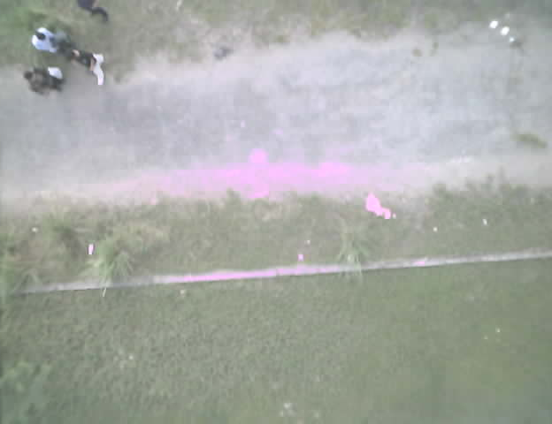
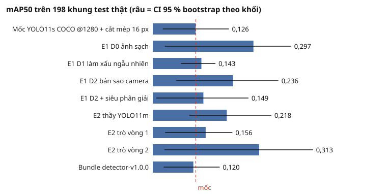
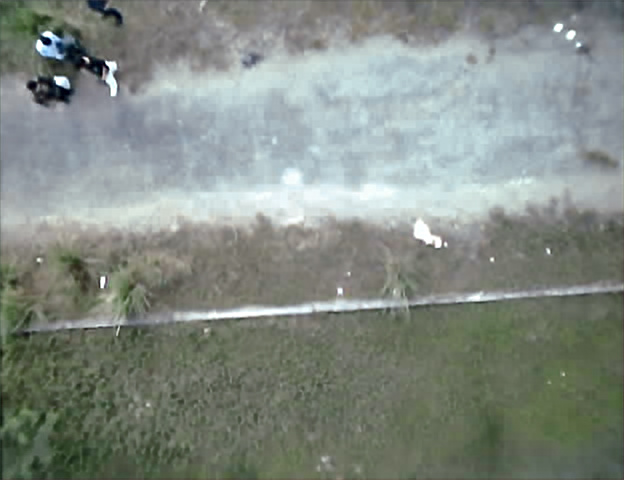
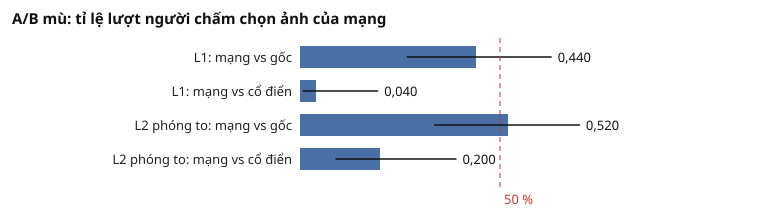
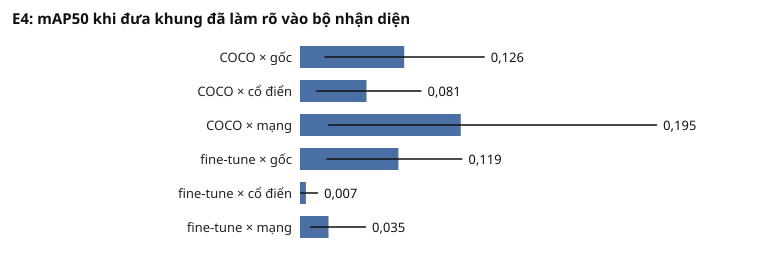
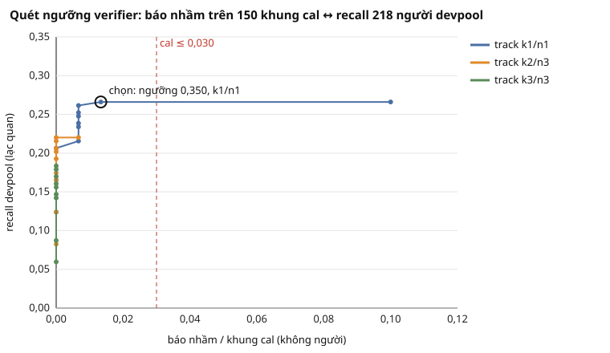

Làm rõ cho người xem và phát hiện người, chấm trên khung bay thật
Đồ án Xử lý ảnh, PTIT. GVHD: PGS.TS. Phạm Văn Cường. Nhóm 4 sinh viên.
Camera thật và cái nó làm hỏng
ESP32-S3 + OV3660, JPEG 640×480 chất lượng 12, qua Wi-Fi tới laptop
Ám hồng vùng sáng, mù như sương, vỡ khối JPEG
Tối bốn góc, dải đen 16 px mép trái
Bản báo cáo trước viết cho ESP32-CAM OV2640 và chấm trên ảnh tự sinh: sai camera, sai thước đo

Khung gốc, chuyến 02/11/2026
Luật của đồ án
Chỉ chấm trên khung bay thật
198 khung test (39 có người), 100 khung dev-val, chia theo khối thời gian
Thêm 459 khung không người để đếm báo nhầm
CI 95 % bằng bootstrap theo khối; mọi bảng sinh bằng scripts/reproduce.py
Hai câu hỏi nghiên cứu
Câu 1. Làm xấu ảnh huấn luyện theo số đo của chính camera (D2) có hơn làm xấu ngẫu nhiên (D1) không?
Câu 2. Làm rõ ảnh trước khi nhận diện có giúp không? Dự đoán: giúp bộ có sẵn, không giúp bộ đã tinh chỉnh.
Bản sao camera D2
Tối góc theo tiêu cự đo được, mù theo mô hình khí quyển, ám hồng theo ngưỡng bão hoà, dải đen mép trái
Nén JPEG bằng đúng bảng lượng tử đọc từ file của camera, lấy mẫu màu 4:2:2
Tham số hiệu chỉnh tự động cho khớp thống kê khung dev thật
Lệch thống kê: D1 5,93 → D2 0,80. Nhưng C2ST vẫn ~0,95: nội dung ảnh nguồn còn khác bãi bay
Nhận diện người

mAP50 trên 198 khung test, râu = CI 95 %
Đọc kết quả nhận diện
D2 hơn D1 0,093 mAP50, CI chạm 0: chưa đủ để kết luận
Báo nhầm trên khung bay không người: D2 0,30 so với D1 0,99, CI nằm trọn một phía
Ship trò vòng 1 theo dev-val; trên test nó chỉ 0,120. Vòng 2 đạt 0,313 nhưng dev-val chọn sai
Bài học: 100 khung dev-val không đủ để xếp hạng model sát nhau
Làm rõ ảnh: cổ điển và mạng
Gốc

Mạng NAFNet enhancer-v1.0.0
Cổ điển: 9,2 ms/khung CPU. Mạng: 20,7 ms GPU, xoá 99,9 % điểm hồng, nhưng màu nguội, khử mù yếu, nhấp nháy tăng 1,8 lần.
Chấm mù A/B

Người chấm chọn cổ điển 24/25 lượt. Mạng đạt 3/7 tiêu chí: không bật mặc định.
E4: làm rõ trước khi nhận diện?

COCO có sẵn + ảnh mạng: +0,069, CI chạm 0
Bộ đã tinh chỉnh + ảnh mạng: −0,085, CI trọn dưới 0
Chiều khớp dự đoán; nhận diện luôn chạy trên khung gốc
Chạy thật trong phần mềm drone
Phát lại chuyến 02/11, đúng nhịp
p50
p95
Ngân sách p95
Detector
23,6 ms
33,4 ms
30 ms
Enhancer
12,5 ms
19,0 ms
30 ms
Tổng
37,5 ms
54,1 ms
50 ms
Bỏ 0,3 % khung; hết tốc lực 23,6 khung/s và đạt ngân sách. Ở nhịp camera thật ngân sách không đạt trên laptop này (detector 1280 px + GPU hạ xung giữa hai khung): nhóm chấp nhận và ghi là giới hạn.
Trả lời
Câu 1. Có, ở độ giống thật mức pixel và ở báo nhầm. Về mAP chưa kết luận được.
Câu 2. Không giúp bộ đã tinh chỉnh (giảm rõ). Với bộ có sẵn có xu hướng giúp nhưng CI chạm 0.
Giới hạn: một bãi, một buổi; 39 khung test có người; bảng lượng tử chỉ đo ở q12.
Bản v2: lọc ba tầng, ảnh rõ hai tầng
Nhận diện: detector → bộ xác minh từng hộp (EfficientNet-B0, cắt vùng ngay trong ONNX) → lọc theo track
Ảnh rõ trực tiếp: bộ cổ điển xuất ONNX, thay mạng NAFNet; offline: siêu phân giải ×2 sau chuyến bay
Thêm dữ liệu ngoài HERIDAL, WiSARD, TinyPerson (chỉ dùng nghiên cứu); chọn model bằng k-fold theo phiên bay
Tập test v1 giữ nguyên, chỉ chấm một lần; đích đặt trước khi chạy
v2 nhận diện: báo nhầm giảm, đích chưa đạt
198 khung test
v1
v2 cả hệ
mAP50
0,120
0,210
Báo nhầm / khung bay trống
0,881
0,289
Recall ở ngưỡng vận hành
0,396
0,396
Hiệu mAP50 [CI 95 %]
+0,090 [+0,026; +0,189]
Hiệu báo nhầm [CI 95 %]
−0,591 [−1,033; −0,273]

Điểm vận hành chọn trên khung cal, không trên test
Cải thiện là của bộ xác minh, CI không chạm 0. Đích mAP50 ≥ 0,30 và recall ≥ 0,6 không đạt; báo nhầm trên tập giữ kín chưa đo được (không có phiên bay trống). Detector vẫn là v1.
v2 ảnh rõ: thử mù A/B và thời gian
Lượt cả khung, 25 cặp mỗi so sánh
Thắng
Kết luận
Cổ điển (ONNX) vs gốc
25/25
đạt (mặc định bật theo quyết định có từ trước)
Offline ×2 vs gốc
25/25
đạt
Offline ×2 vs cổ điển
16/25
không đạt (cận dưới 0,445): không ship
Trong IOT-CV, p95 tổng (cùng lúc đo, GPU hạ xung)
v1 → v2
Trần +5 ms
Có người xem Ảnh rõ
99,1 → 89,5 ms
đạt
Chỉ nhận diện
64,0 → 72,4 ms
không đạt
Offline tốn 0,758 giờ GPU cho chuyến 20 phút.
Lần thử v1 (mạng NAFNet), mạng thắng gốc 11/25 ở lượt cả khung. Chủ dự án nhận xét kết quả làm rõ lần này tốt hơn rõ rệt: đây là cảm nhận, không phải số đo.
Việc tiếp và tái lập
Sửa tận gốc ở cảm biến: phơi sáng, cân bằng trắng, đo bảng lượng tử ở q40
Thêm khung bay có người, nhiều buổi, để dev-val chọn đúng model
Mạng làm rõ: ràng buộc màu và ràng buộc thời gian
v2: bay một buổi trên bãi trống để có tập giữ kín đo báo nhầm
python scripts/reproduce.py --check chấm lại 18 tệp dự đoán và so sha256 13 bảng/hình
Tham khảo: He 2011 (dark channel), Wang 2021 (Real-ESRGAN), Chen 2022 (NAFNet), Zhu 2022 (VisDrone),
Bińkowski 2018 (KID), Lopez-Paz 2017 (C2ST), Oquab 2024 (DINOv2). Danh sách đủ trong BAO_CAO_DO_AN.md.